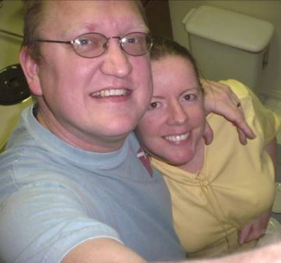

The authors of FeetWetCoding are Robert Holder and Janice Dugger, a husband and wife team. Your questions and comments on our project are very welcome, particularly any feedback on the exercises themselves. Please be courteous when contacting us. We write, maintain and distribute this software for free in our spare time. Hostile or obnoxious communications will (probably :-) be ignored.
● Contact us if you have feedback on the project, particularly anything that is confusing, unclear or undocumented.
● For questions about C++ syntax, logic, program structure, build issues, etc., there are terrific forums and chat sites that can help you! Here are a few:
o http://www.cplusplus.com/forum/beginner/
o http://www.codeguru.com/forum/
o http://groups.google.com/group/comp.lang.c++.moderated
o visit ##C++ on the freenode irc chat server
o (you can use pidgin to connect to freenode.)
● If your program has bugs in it, or you are stuck, check the forums and ##C++ irc chatroom first. As a last resort, check the solution .ccp file for the exercise you are stuck on.
● If you are having problems using Qt Creator, try http://developer.qt.nokia.com/forums/viewforum/13/
How to ask technical questions: http://catb.org/esr/faqs/smart-questions.html
Sorry, but Robert and Janice will not do your school homework for you! :-)
For feedback on FeetWetCoding you may reach us at:
FeetWetCoding version 0.2.2 released 2012Mar24 copyright (c) 2011,2012 Robert Holder, Janice Dugger.
...click the ZIP button on our Github page for the latest source!
Created with the Personal Edition of HelpNDoc: Easily create PDF Help documents